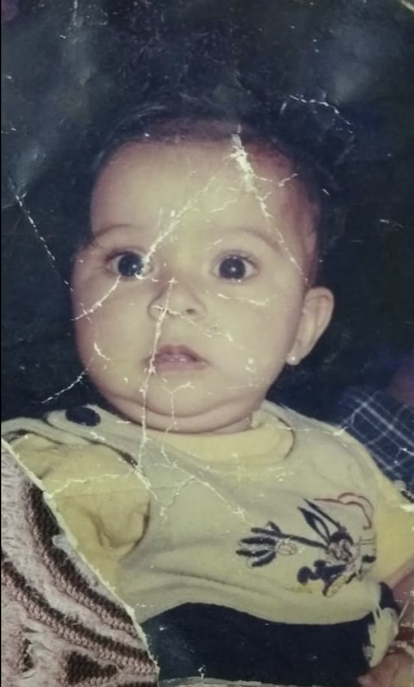

🌷
Your heart
You are kind and loving in a way that feels real. Even when you don't make a big show of it, your heart gives you away.
Today isn't about a date or a party. It's about you—the beautiful, stubborn, kind-hearted, hardworking girl who deserves to be celebrated just for being exactly who she is.
A little glimpse of the girl who grew into someone so wonderfully, unmistakably you.

Somehow, you were always going to be this lovely.
Musu, I hope you know that I don't just love the big things about you. I notice the little things, too. The way you care. The way you keep going. The way you can be difficult one minute and have the purest heart the next. You are a whole person, not someone who has to be perfect to be wonderful.
You are kind and loving in a way that feels real. Even when you don't make a big show of it, your heart gives you away.
I see how hard you work. I hope you give yourself even half the credit I think you deserve. You should be proud of yourself, Musu.
Yes, sometimes you are difficult. And yes, sometimes you think you are being very clever. I wouldn't edit that personality out of you.
You have music for your moods, movies for your evenings, books for your quiet moments, and a whole world of places and flavours waiting for you.
Happy birthday, meri jaan.
Sometimes I think about how funny it is that we lived so close to each other in Jammu and still had to meet at Dhruv. Less than a few minutes from each other's homes, and yet there we were, two people who had no idea that a coaching class, a few conversations, and those walks after physics would become such a big part of our lives. I still think of Rani Park, of all the talking, and of the ordinary days that never felt ordinary because you were there.
I remember the little details: how I would walk home first and then go back for my scooter; how we could turn a short walk into a whole conversation; how you could be so sure you were being clever, and how quickly that confidence would disappear when I caught you. I hope you never lose that side of you—the expressive face, the stubborn little arguments, the way you get red and mad when I tease you. And your “why do you hate me?” Honestly, Musu, how could I ever explain how much I love that you are exactly this much you?
What I admire most about you is not one grand thing. It is the person you are in all the small moments. You work hard even when things are not easy. You keep going. You care deeply. You have a kind, pure heart, even if you sometimes try to hide it behind that attitude of yours. I have seen you handle change, build a life in a new country, and keep showing up for the people and things that matter to you. I hope you give yourself even a little of the credit I give you.
I think about the years when the world made even seeing each other difficult, and then the years when Canada was between us. The time difference, the late nights and early mornings, the calls that somehow became our everyday life—sometimes we would sit there talking for hours, eating together or watching something together, as if the distance could be persuaded to leave us alone for a while. And I remember Delhi in April, waiting to see you again after so long. The moment you were there, it felt less like starting over and more like coming back to something that had always been ours.
But today, I don't want this letter to be only about our story. I want it to be about you. The girl who deserves to see the places she dreams about, especially Europe; to find the little streets, cafés, and bookstores she will want to remember; to eat her way through new places and still know that Kashmiri food will always taste like home. The girl who deserves beautiful music, books she cannot put down, movies that make her laugh, and as many cosy Gilmore Girls evenings as she wants.
I hope this year brings you more than achievements and responsibilities. I hope it brings you moments when you feel proud of yourself for no particular reason. I hope you feel loved without having to ask, understood even when you cannot find the words, and free to be soft, silly, stubborn, ambitious, quiet, loud—every version of Musu.
If I could wish one thing for you, it would be that you could see yourself the way I see you: not as someone who has to become more, do more, or prove more, but as someone already so deeply worth celebrating. I am proud of you, I believe in you, and I will always be in your corner—cheering for your dreams.
Happy birthday, my love. I hope life is gentle with your heart and gives you room for every beautiful thing you want. Keep being my Musu. The world is lucky to have you, and I am luckier still.
Not a list of things you should do. Just wishes for the things that make you light up.
Music for every mood, every drive, every version of you.
Stories that keep you up late and characters you miss when they're over.
Cosy cafés, quick-witted conversations, and Gilmore Girls comfort.
New cities, pretty streets, slow mornings, and memories made your way.
All the Kashmiri food your heart wants, whenever you want it.
New dishes, new places, and always room for one more bite.
Keep your kind heart. Keep your big dreams. Keep your opinions, your laughter, your clever little schemes, your love for stories and travel and food. Take up space. Be proud of yourself. Let yourself be celebrated.
There is nobody else quite like you, and that is your magic.